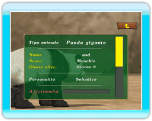

14 |
Schermata di stato |
 |
|

Punta su un animale nell'area e premi per attivare il Monitoraggio.
●Tipo di animale Il tipo di animale che stai allevando. ●Nome animale Il nome che hai dato all'animale. ●Sesso Indica se l'animale è maschio o femmina. ●Giorni allevamento I giorni trascorsi da quando hai iniziato ad allevare l'animale. ●Personalità La personalità corrente dell'animale. ●Affettuosità Aumenta gradualmente giorno dopo giorno se i parametri Stomaco ed Energia si mantengono alti. Se l'area in cui vive l'animale è sporca, l'Affettuosità non aumenterà neanche quando i parametri Stomaco ed Energia sono elevati. ●Energia Aumenta ogni volta che chiami o coccoli l'animale. Se però l'area in cui vive l'animale è sporca, l'Energia diminuirà più rapidamente. ●Stomaco Si riduce gradualmente col passare del tempo, segnalando che l'animale ha fame. Dagli da mangiare prima che il suo stomaco sia completamente vuoto. ●Num. volte nutrito Indica quante volte hai nutrito l'animale. ●Num. volte coccolato Indica quante volte hai coccolato l'animale. ●Num. volte chiamato Indica quante volte hai chiamato l'animale. ●Incinta Visualizzato solo per una femmina incinta. ●Padre Mostra il nome del padre dell'animale. (L'informazione non è disponibile per gli animali presi dall'Allevamento). ●Madre Mostra il nome della madre dell'animale. (L'informazione non è disponibile per gli animali presi dall'Allevamento). |
 |
 |
 |